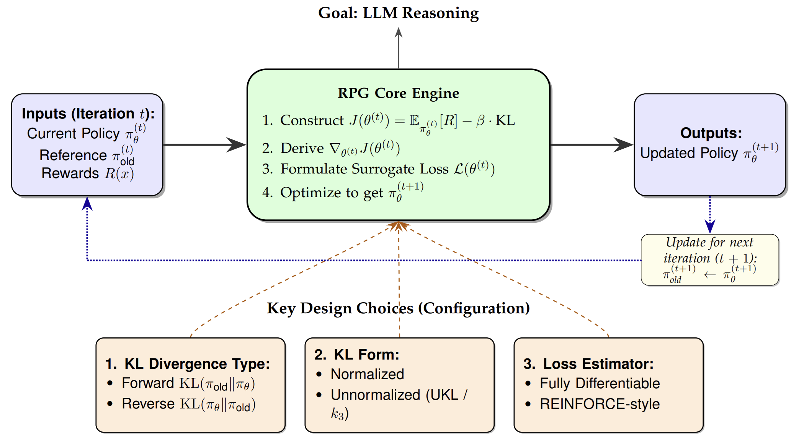
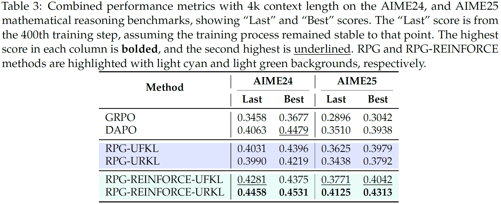
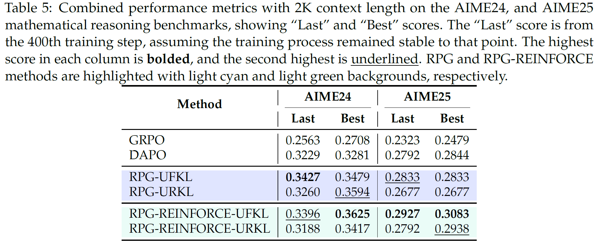
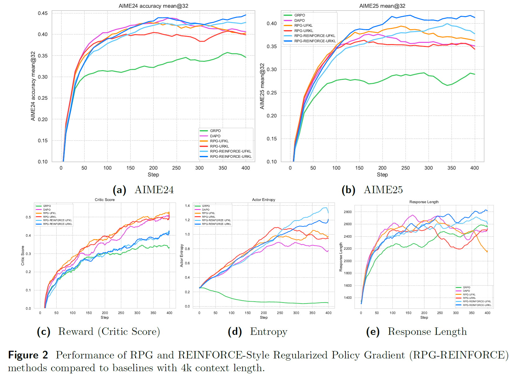
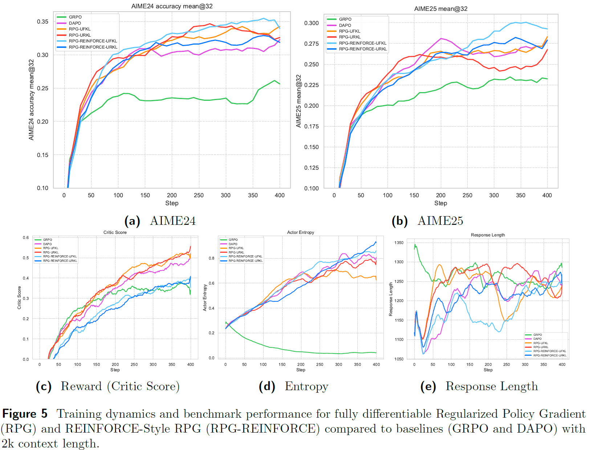
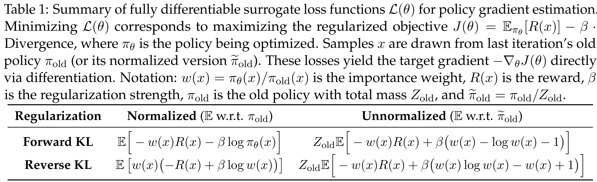
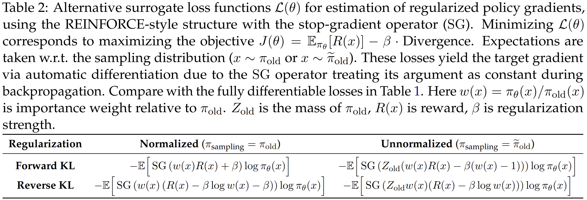

Policy gradient algorithms have been successfully applied to enhance the reasoning capabilities of large language models (LLMs). KL regularization is ubiquitous, yet the design surface, choice of KL direction (forward vs. reverse), normalization (normalized vs. unnormalized), and estimator (k1/k2/k3), is scattered across the literature and often intertwined with off-policy estimation. We ask a focused question: under the off-policy setting, what weighting is required for each KL variant so that the surrogate we optimize yields the exact gradient of the intended KL-regularized objective? We answer this with a compact, unified derivation we call the Regularized Policy Gradient (RPG) view. RPG (i) unifies normalized and unnormalized KL variants and shows that the widely-used k3 penalty is exactly the unnormalized KL; (ii) specifies conditions under which REINFORCE-style losses with stop-gradient are gradient-equivalent to fully differentiable surrogates; (iii) identifies and corrects an off-policy importance-weighting mismatch in GRPO’s KL term; and (iv) introduces RPG-Style Clip, a clipped-importance-sampling step within RPGREINFORCE that enables stable, off-policy policy-gradient training at scale. On mathematical reasoning benchmarks (AIME24, AIME25), RPG-REINFORCE with RPG-Style Clip improves accuracy by up to +6 absolute percentage points over DAPO. Notably, RPG is a stable and scalable RL algorithm for LLM reasoning, realized via (a) a KL-correct objective, (b) clipped importance sampling, and (c) an iterative reference-policy update scheme.







Please cite the paper and star this repo if you use RPG and find it interesting/useful, thanks!
@article{zhang2025design,
title={On the Design of KL-Regularized Policy Gradient Algorithms for LLM Reasoning},
author={Zhang, Yifan and Liu, Yifeng and Yuan, Huizhuo and Yuan, Yang and Gu, Quanquan and Yao, Andrew C},
journal={arXiv preprint arXiv:2505.17508},
year={2025},
}